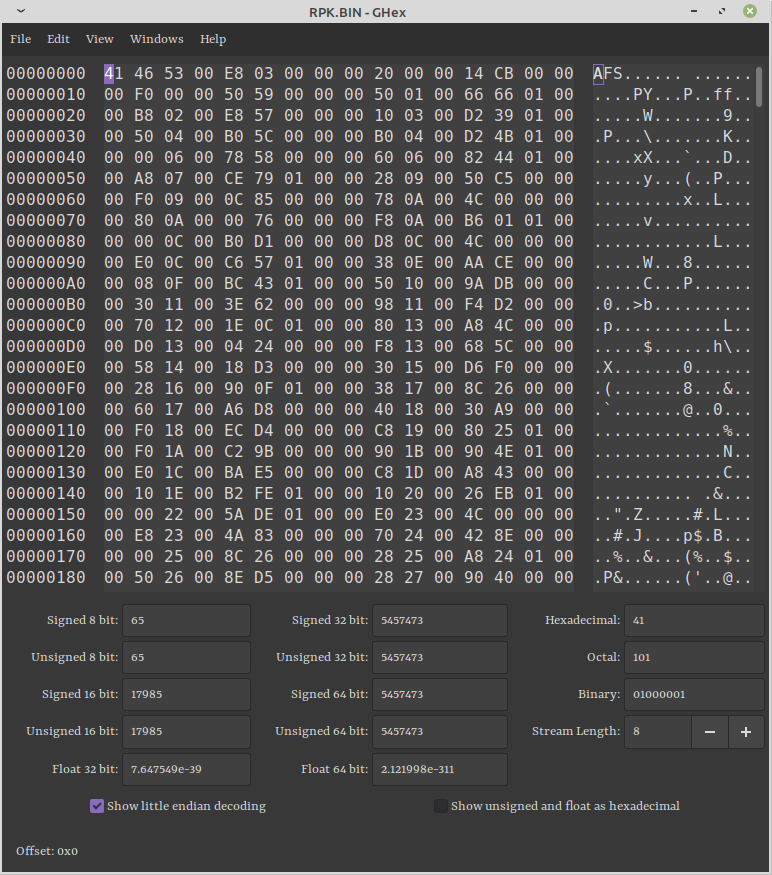

I can't be bothered to deal with the MODULES/IOPRP310.IMG file thanks to its extension, but I can be bothered to look at the MOVIE folder. Perhaps unsurprisingly, VLC is more than happy to open the *.SFD files, though that isn't to say that it plays them without issue. In particular, it does play, but the playhead tracking is completely messed up. I'd also initially believed that the audio was held elsewhere as the couple clips I tried were silent, but I eventually decided to just blindly convert them to *.mp4 files instead:
$ManaKhemia/MOVIE$ for f in *.SFD; do ffmpeg -i "$f" "${f/%.SFD/.mp4}"; done
$ManaKhemia/MOVIE$ ls *.mp4
A9_EDB.mp4 A9_ED.mp4 A9_OP.mp4 AVANJ.mp4 AVAN.mp4 SCHOOL.mp4
I clipped the ffmpeg output, but there weren't any errors, and this fixed both of the problems: the videos play normally AND with sound. And what I found is:
File
Scene
Length
A9_ED.mp4
credits
3:45
A9_EDB.mp4
credits roll (without audio/animations)
3:45
A9_OP.mp4
the opening animation before the title screen (where Run for Your Life plays)
2:00
AVAN.mp4
the opening scene where Vayne meets Sulpher (immediately after selecting New Game)
0:55
AVANJ.mp4
the same scene, but with JA audio
0:55
SCHOOL.mp4
the establishing shots of Al-Revis that plays during the Orientation sequence
1:25
Nothing too crazy, but it's interesting to me just how few pre-rendered cutscenes there are. And the Vayne-Sulpher opening is one of them—none of the chapter opening scenes (Theofratus, Sulpher, and/or Isolde) scenes are. Which makes sense given that this first one is the only such scene where the text doesn't appear in the normal textboxes, but it was still something I noticed.
III: Investigating the SOUND folder
What strikes me as odd ehre is that there are two subfolders, each with only a single file (whose name matches the folder itself). This could easily have been SOUND/SSE.AFS and SOUND/STREAM.AFS, but... whatever. Given the name of the folder, I think it's safe to assume that these are audio files, but I've never heard of *.AFS files. Presumably, it's some sort of compression/archive file.
Spurred on by the success of VLC and ffmpeg in the previous step, I tried just using those, but neither of them were very happy with it. I tried importing it as Raw Audio in Audacity with the default settings but was greeted by nothing by ear-piercing terribleness. So... it seems like I'm going to have to figure out what's going on—according to Wikipedia:
ADX is a lossy proprietary audio storage and compression format developed by CRI Middleware specifically for use in video games; it is derived from ADPCM. Its most notable feature is a looping function that has proved useful for background sounds in various games that have adopted the format, including many games for the Sega Dreamcast as well as some PlayStation 2, GameCube and Wii games. One of the first games to use ADX was Burning Rangers, on the Sega Saturn. Notably, the Sonic the Hedgehog series from the Dreamcast generation up to at least Shadow the Hedgehog have used this format for sound and voice recordings.
On top of the main ADPCM encoding, the ADX toolkit also includes a sibling format, AHX, which uses a variant of MPEG-2 audio intended specifically for voice recordings and a packaging archive, AFS, for bundling multiple ADX and AHX tracks into a single container file.
The article goes on to describe the technical specification for the ADX format, but since we're looking at an AFS file, that's not much help at the moment. That's... fine, I guess. The article also links to a very old website (a 2009 wayback-machine snapshot of a Geocities page) with source code for an AFS extractor. Downloading the code and inspecting it—
—shows it to be some good 'ol C code with what seem to be prepacked Windows executables. I was, of course, running this on Linux, so I just rebuilt the executables myself rather than bothering with WINE. The .txt file is a bit of a garbled mess, but it is enough to let us know that the script grabs the name of the file from argv, so we can run
which didn't seem to do anything useful. Both the adx2wav02 and $ManaKhemia/SOUND/SSE folders were unchanged, and the only thing printed was $ManaKhemia/SOUND/SSE/SSE.AFS - 0, which... isn't super helpful. Looking at the C code, it seemed to be output by this line:
printf("%s - %d\n",name,n);
which indicated that n==0, which is a problem for the for(i=0;i<n;i++) { ... } loop that starts a few lines later, given that this seems to be the loop that actually pulls the n ADX files out of the archive.
III (Part II): Translating C to Python
In order to get a better handle on this code, since there was obviously something happening (though, admittedly, it was probably with the AFS file itself), I began to port the code over to Python 3, which is a language I actually know.
The main function is almost trivial, but I really had to figure out the rest of the C code. Of course, it wasn't commented at all, so here's my annotated version:
int afs_extract(char *name) {
// This section just establishes a bunch of variables,
// which I don't need to deal with in Python.
FILE *fp,*out;
int i,n;
char buf[0x8000];
struct {
char id[4];
long num;
} hdr;
struct {
long offset;
long size;
} *idx;
char basename[256],*p;
// assign the value of `name` to `basename`
// ...which we can do with a simple assignment in Python
strcpy(basename,name);
// strrchr is weird, but we immediately reassign p anyway
// whenever it isn't null, and I can't actually find where
// it would get used, so... I'm just going to ignore it
p = strrchr(basename,'.');
if (p) *p=0;
// open the target file in "rb" mode, and, on error, return -1
fp = fopen(name,"rb");
if (fp==NULL) return -1;
/* fread(*ptr, size, nmemb, *stream)
* ---------------------------------
* reads data from `stream` into the array pointed to by `ptr`
* `size` = size (bytes) of each element to be read
* `nmemb` = number of elements, each of size `size`
*
* In this way, we read 8 chunks of 1 byte each from `fp`
* (the AFS file) and write them into `hdr`
*
* Because of the struct defining `hdr`, the first four bytes
* should end up as hdr.id (interpreted as a string), and the
* remaining four as hdr.num (interpreted as a long).
*/
fread(&hdr,1,8,fp);
// We compare hdr.id to the literal string "AFS" and if we get
// a value other than zero (the strings don't match), we close
// the file and complain that it's not a proper AFS file.
if (memcmp(hdr.id,"AFS",4)) {
fclose(fp);
printf("not AFS\n");
return -1;
}
// at this point, we needlessly assign n = hdr.num
n = hdr.num;
// This outputs the file we're extracting from and the number
// of ADX files contained within it.
printf("%s - %d\n",name,n);
// allocate enough space in `idx` for n copies of the struct
// containing the offset and size data?
idx = malloc(sizeof(*idx)*n);
// as before, use fread to read from `fp`: here, we read
// n blocks of 8 bytes each, assigning them into `idx`
fread(idx,8,n,fp);
// now, we loop through each of these ADX "header" structs
for(i=0;i<n;i++) {
int size;
char outfile[256];
// assign outfile as the name of the destination ADX file
// indexed by number of the loop
sprintf(outfile,"%s_%02d.adx",basename,i);
// actually open this file in "wb" mode
out = fopen(outfile,"wb");
/* fseek(*stream, offset, whence)
* ------------------------------
* set the file position of `stream` to a position of `offset`,
* relative to `whence`
*
* In this case, we seek to idx[i].offset: the offset of the current
* adx file, and whence=SEEK_SET, meaning that we seek from the
* beginning of the file (absolute seeking).
*/
fseek(fp,idx[i].offset,SEEK_SET);
// needlessly alias idx[i].size, but this is the size of the
// ADX data
size = idx[i].size;
// output {destination} {offset} {size}
printf("%s %08x %08x\n",outfile,idx[i].offset,size);
// while we still have to data to read for this file
while(size) {
// figure out how much to read, capped by the size of the
// buffer we established earlier.
int rsize = size<sizeof(buf)?size:sizeof(buf);
// then actually read that many bytes into the buffer
rsize = fread(buf,1,rsize,fp);
// and write it to the outfile
fwrite(buf,1,rsize,out);
// decrement the amount we still have let to read
size-=rsize;
}
// close the output file
fclose(out);
}
// and clean up some stuff down here too
free(idx);
fclose(fp);
return -1;
}
Which I turned into this Python (3.6+) script:
import collections
import pathlib
import sys
def afs_extract(filepath: pathlib.Path):
with open(filepath, 'rb') as afs:
# read 8 bytes from file, with the first four bytes
# being hdr.id, and the last four bytes being the
# number of ADX files in the archive
HDR = collections.namedtuple('HDR', ('id', 'num'))
hdr = HDR(
id=afs.read(4),
# assuming little endian because the sample AFS file
# I'm working with gives this as "CF 00 00 00", which
# is 207 with little endian and 3,472,883,712 with big
# endian, which... just feels too big.
num=int.from_bytes(afs.read(4), 'little')
)
# We compare hdr.id to the literal bytestring b'AFS\x00'
# and when these don't match, we close the file and complain
# that it's not a proper AFS file.
if hdr.id != b'AFS\x00':
sys.exit('Not an AFS file')
# output the file we're extracting from and the number of
# ADX blocks contained within it
print(f'{filepath} - {hdr.num} ADX blocks')
# read blocks of 8 bytes each, assigning them into `idx`
ADXHeader = collections.namedtuple('ADXHeader', ('offset', 'size'))
idx = [
ADXHeader(
offset=int.from_bytes(afs.read(4), 'little'),
size=int.from_bytes(afs.read(4), 'little')
)
for _ in range(hdr.num)
]
# now, we loop through each of these ADX "header" structs
for i, header in enumerate(idx):
# assign outfile as the path of the destination ADX file
# indexed by the number of the loop, then open it in "wb"
# mode
outfile = filepath.with_name(f'{filepath.stem}_{i:03}.adx')
with open(outfile, 'wb') as adx:
# set the file position of the input stream according
# to the data in the header
afs.seek(header.offset)
# output {destination} {offset} {size}
print(f'{str(outfile):<50} offset=0x{header.offset:08X} size=0x{header.size:08X}')
# read the necessary number of bytes into memory
# and write it out to the adx file
adx.write(afs.read(header.size))
if __name__ == '__main__':
if len(sys.argv) < 2:
sys.exit('DreamCast AFS extract ADX')
for filename in sys.argv[1:]:
path = pathlib.Path(filename).resolve()
afs_extract(path)
Running it via
$ python3 $ManaKhemia/SOUND/SSE/SSE.AFS
gave me $ManaKhemia/SOUND/SSE/SSE_{000-206}.adx to play with. I wasn't initially sure that these files would be workable at all since I had to make an assumption about how the data should be read into the idx struct (to get offset and size): I assumed that they each get four bytes (since we were reading in eight), but that was essentially a guess.
III (Part III): Converting ADX files to something usable
As noted earlier, AHX is just an implementation of MPEG2 audio and the decoding method is basically the same as the standard, it is possible just to demux the stream from the ADX container and feed it through a standard MPEG Audio decoder like mpg123. The ADX header's "sample rate" and "total samples" are usually correct if a decoder needs them (so should be set by encoder/muxer implementations) but most of the other fields such as the "block size" and "sample bitdepth" will usually be zero — as noted above, the looping functionality is also unavailable.
Funnily enough, I was really about to go through all of the conversion processes myself (because the Wikipedia article gave the specification), but I found this paragraph hiding at the bottom of the article and just decided to test the ADX files in VLC, which... again, perhaps unsurprisingly, worked just fine. Some ffmpeg-ing later, I had them all as .ogg files:
$ManaKhemia/SOUND/SSE$ for f in *.adx; do ffmpeg -i "$f" "${f/%.adx/.ogg}"; rm "$f"; done
That's easy to add to the Python script, which I also went ahead and added a little bit of QOL features, so running this updated Python script—
—resulted in 207 files in $ManaKhemia/SOUND/SSE and another 117 in $ManaKhemia/SOUND/STREAM. The former group was mostly sound effects that I didn't know how to trace, so I analyzed the stream files. I definitely couldn't get all of them, and there were quite a few that I recognized but could quite place, so that'll be a running project as I play through the game again.
IV: VPACK and VPACKJ
Hey, look! The files in these two folders are also .AFS files, which I've just spent a bunch of time trying to figure out how to decode!
Okay, well, there's 1000 ADX files in each of those AFS files, so the folders get a bit bloated, but that's easy enough to fix:
$ManaKhemia/VPACK$ for i in $(seq -w 00 11); do mkdir V${i}000; mv V${i}000_*.ogg V${i}000/; done
$ManaKhemia/VPACKJ$ for i in $(seq -w 00 11); do mkdir V${i}000; mv V${i}000_*.ogg V${i}000/; done
This places them in a folder according to which AFS file they came from. It's still 1000 files in each folder, but at least it's not 11400 files in one folder.
Looking at the first few, it became apparent that these were going to be all of the voice-acted lines:
File
Speaker
Line
V00000_000.ogg
VAYNE
Who are you?
V00000_001.ogg
SULPHER
*meow*
V00000_002.ogg
VAYNE
Sulpher? Are you all alone too?
V00000_003.ogg
SULPHER
*meow*
V00000_004.ogg
VAYNE
I see... Can I stay with you?
V00000_005.ogg
SULPHER
*meow*
V00000_006.ogg
VAYNE
Thank you. Um, I'm...
V00000_007.ogg
SULPHER
*meow*
V00000_008.ogg
VAYNE
Vayne is my name...
V00000_009.ogg
VAYNE
This is Al-Revis Academy... The place where they teach alchemy...
V00000_010.ogg
ZEPPEL
Oh, I finally found you. Can we talk for a minute?
V00000_011.ogg
VAYNE
Wh-Who are you?
Annoyingly, #012 was malformed in some way and wouldn't play, but the following ones were fine. Similarly, the VPACKJ files were the same, just the Japanese voices:
File
Speaker
Line
V00000_000.ogg
VAYNE
.....。君は、だれ？
V00000_001.ogg
SULPHER
*meow*
V00000_002.ogg
VAYNE
サルフャ...君も、一人ぼっちなの？
V00000_003.ogg
SULPHER
*meow*
V00000_004.ogg
VAYNE
そっか...一緒にいてもいいかな？
V00000_005.ogg
SULPHER
*meow*
V00000_006.ogg
VAYNE
ありがとう。えっと、僕は...
V00000_007.ogg
SULPHER
*meow*
V00000_008.ogg
VAYNE
ヴァイン...僕の、名前...
V00000_009.ogg
VAYNE
ここが、アルレビス学園...錬金術を、教えてくれるところ...
V00000_010.ogg
ZEPPEL
やれやれ、やっと見つけた...ちょっと、いいかな？
V00000_011.ogg
VAYNE
だ、誰ですか？
V: RPK.BIN
As the extension would indicate, this is a binary file, which gave me very little hope of figuring out anything about it. But, opening it in a hex editor yielded this:

which is super promising: it's yet another AFS file under the hood (which we can tell because AFS files start with the literal string "AFS"). So I fired up my AFS extractor script once more, which resulted in being handed 1000 more ADX/OGG files, which seem to be matches for those found in VPACKJ/V00000.AFS, which... no, I don't understand why either. The first few are definitely the same, and randomly trying #751 (Philo: Nikki-chan, doushite...?—from context of the surrounding lines, this seems to be part of the horror night escapade, wherein Vayne, Philo, and Nikki are exploring the infirmary) revealed another match. Who knows why those are here too?
VI: SLUS_217.35
Ignoring the system config file (which really isn't interesting), this is the only thing left in the root folder (plus the MODULES/IOPRP310.IMG file, of course). Anyway, looking at this in a hex editor revealed it to be an ELF file (...or, at least, given that the first four bytes were ".ELF"...)
I'll admit that I've little idea of how to deal with this, but passing it through eu-readelf (from the elfutils package) gave this output:
ELF Header:
Magic: 7f 45 4c 46 01 01 01 00 00 00 00 00 00 00 00 00
Class: ELF32
Data: 2's complement, little endian
Ident Version: 1 (current)
OS/ABI: UNIX - System V
ABI Version: 0
Type: EXEC (Executable file)
Machine: MIPS
Version: 1 (current)
Entry point address: 0x10001c
Start of program headers: 52 (bytes into file)
Start of section headers: 11204564 (bytes into file)
Flags: 0x20920001
Size of this header: 52 (bytes)
Size of program header entries: 32 (bytes)
Number of program headers entries: 1
Size of section header entries: 40 (bytes)
Number of section headers entries: 21
Section header string table index: 20
Section Headers:
[Nr] Name Type Addr Off Size ES Flags Lk Inf Al
[ 0] NULL 00000000 000000 000000 0 0 0 0
[ 1] .text PROGBITS 00100000 001000 40bd90 0 AX 0 0 64
[ 2] .init PROGBITS 0050bd90 40cd90 000024 0 AX 0 0 1
[ 3] .fini PROGBITS 0050bdb4 40cdb4 00001c 0 AX 0 0 1
[ 4] .vutext PROGBITS 0050bdd0 40cdd0 0008b0 0 AX 0 0 16
[ 5] .ctors PROGBITS 0050c680 40d680 000008 0 WA 0 0 4
[ 6] .dtors PROGBITS 0050c688 40d688 000008 0 WA 0 0 4
[ 7] .reginfo SHT_LOPROC+6 0050c690 aaf714 000018 1 0 0 4
[ 8] .data PROGBITS 0050c700 40d700 509ba8 0 WA 0 0 64
[ 9] .eh_frame PROGBITS 00a162a8 9172a8 000484 0 WA 0 0 4
[10] .jcr PROGBITS 00a1672c 91772c 000004 0 WA 0 0 4
[11] .vudata PROGBITS 00a16730 917730 000000 0 WA 0 0 1
[12] .rodata PROGBITS 00a16780 917780 18fc70 0 A 0 0 64
[13] .sdata PROGBITS 00ba6400 aa7400 008298 0 WA 0 0 8
[14] .sbss NOBITS 00bae700 aaf700 0000ec 0 WA 0 0 8
[15] .bss NOBITS 00bae800 aaf714 331038 0 WA 0 0 64
[16] .vubss NOBITS 00edf838 aaf714 000000 0 WA 0 0 1
[17] .mdebug.eabi64 PROGBITS 00000000 aaf72c 000000 0 0 0 1
[18] .DVP.ovlytab SHT_LOPROC+ffff420 00000000 aaf72c 000000 12 W 19 0 4
[19] .DVP.ovlystrtab STRTAB 00000000 aaf72c 000001 0 W 0 0 1
[20] .shstrtab STRTAB 00000000 aaf72d 0000a6 0 0 0 1
Program Headers:
Type Offset VirtAddr PhysAddr FileSiz MemSiz Flg Align
LOAD 0x001000 0x00100000 0x00100000 0xaae698 0xddf838 RWE 0x1000
Section to Segment mapping:
Segment Sections...
00 .text .init .fini .vutext .ctors .dtors .data .eh_frame .jcr .rodata .sdata .sbss .bss
Call frame information section [ 9] '.eh_frame' at offset 0x9172a8:
[ 0] CIE length=12
CIE_id: 0
version: 1
augmentation: ""
code_alignment_factor: 1
data_alignment_factor: 4
return_address_register: 31
Program:
def_cfa r29 (M) at offset 0
[ 10] FDE length=28 cie=[ 0]
CIE_pointer: 20
initial_location: 0x004fcbf8
address_range: 0x128
Program:
advance_loc 16 to 0x10
def_cfa_offset 32
advance_loc 24 to 0x28
offset_extended_sf r31 (O) at cfa-16
offset_extended_sf r16 (@) at cfa-32
offset_extended_sf r17 (A) at cfa-24
nop
nop
nop
[ 30] FDE length=28 cie=[ 0]
CIE_pointer: 52
initial_location: 0x004fcd20
address_range: 0x6c8
Program:
advance_loc 4 to 0x4
def_cfa_offset 32
advance_loc 24 to 0x1c
offset_extended_sf r18 (B) at cfa-16
offset_extended_sf r16 (@) at cfa-32
offset_extended_sf r17 (A) at cfa-24
nop
nop
nop
[ 50] CIE length=12
CIE_id: 0
version: 1
augmentation: ""
code_alignment_factor: 1
data_alignment_factor: 4
return_address_register: 31
Program:
def_cfa r29 (M) at offset 0
[ 60] FDE length=28 cie=[ 50]
CIE_pointer: 20
initial_location: 0x004fd3e8
address_range: 0x130
Program:
advance_loc 16 to 0x10
def_cfa_offset 48
advance_loc 24 to 0x28
offset_extended_sf r31 (O) at cfa-16
offset_extended_sf r16 (@) at cfa-32
offset_extended_sf r17 (A) at cfa-24
nop
nop
nop
[ 80] FDE length=28 cie=[ 50]
CIE_pointer: 52
initial_location: 0x004fd518
address_range: 0x6c8
Program:
advance_loc 4 to 0x4
def_cfa_offset 32
advance_loc 24 to 0x1c
offset_extended_sf r18 (B) at cfa-16
offset_extended_sf r16 (@) at cfa-32
offset_extended_sf r17 (A) at cfa-24
nop
nop
nop
[ a0] CIE length=12
CIE_id: 0
version: 1
augmentation: ""
code_alignment_factor: 1
data_alignment_factor: 4
return_address_register: 31
Program:
def_cfa r29 (M) at offset 0
[ b0] FDE length=20 cie=[ a0]
CIE_pointer: 20
initial_location: 0x004fdbe0
address_range: 0x18
Program:
advance_loc 4 to 0x4
def_cfa_offset 16
advance_loc 8 to 0xc
offset_extended_sf r31 (O) at cfa-16
nop
[ c8] FDE length=28 cie=[ a0]
CIE_pointer: 44
initial_location: 0x004fdbf8
address_range: 0x6c8
Program:
advance_loc 4 to 0x4
def_cfa_offset 32
advance_loc 24 to 0x1c
offset_extended_sf r18 (B) at cfa-16
offset_extended_sf r16 (@) at cfa-32
offset_extended_sf r17 (A) at cfa-24
nop
nop
nop
[ e8] CIE length=12
CIE_id: 0
version: 1
augmentation: ""
code_alignment_factor: 1
data_alignment_factor: 4
return_address_register: 31
Program:
def_cfa r29 (M) at offset 0
[ f8] FDE length=20 cie=[ e8]
CIE_pointer: 20
initial_location: 0x004fe2c0
address_range: 0x20
Program:
advance_loc 4 to 0x4
def_cfa_offset 32
advance_loc 4 to 0x8
offset_extended_sf r31 (O) at cfa-16
nop
[ 110] FDE length=28 cie=[ e8]
CIE_pointer: 44
initial_location: 0x004fe2e0
address_range: 0x6c8
Program:
advance_loc 4 to 0x4
def_cfa_offset 32
advance_loc 24 to 0x1c
offset_extended_sf r18 (B) at cfa-16
offset_extended_sf r16 (@) at cfa-32
offset_extended_sf r17 (A) at cfa-24
nop
nop
nop
[ 130] CIE length=12
CIE_id: 0
version: 1
augmentation: ""
code_alignment_factor: 1
data_alignment_factor: 4
return_address_register: 31
Program:
def_cfa r29 (M) at offset 0
[ 140] FDE length=20 cie=[ 130]
CIE_pointer: 20
initial_location: 0x004ff3d0
address_range: 0x64
Program:
advance_loc 4 to 0x4
def_cfa_offset 16
advance_loc 8 to 0xc
offset_extended_sf r31 (O) at cfa-16
nop
[ 158] FDE length=32 cie=[ 130]
CIE_pointer: 44
initial_location: 0x004ff4c8
address_range: 0x154
Program:
advance_loc 4 to 0x4
def_cfa_offset 64
advance_loc 16 to 0x14
offset_extended_sf r18 (B) at cfa-32
offset_extended_sf r17 (A) at cfa-40
offset_extended_sf r16 (@) at cfa-48
advance_loc 16 to 0x24
offset_extended_sf r31 (O) at cfa-16
offset_extended_sf r19 (C) at cfa-24
[ 17c] FDE length=24 cie=[ 130]
CIE_pointer: 80
initial_location: 0x004ff620
address_range: 0x74
Program:
advance_loc 4 to 0x4
def_cfa_offset 16
advance_loc 12 to 0x10
offset_extended_sf r31 (O) at cfa-8
offset_extended_sf r16 (@) at cfa-16
nop
nop
[ 198] FDE length=20 cie=[ 130]
CIE_pointer: 108
initial_location: 0x004ff698
address_range: 0x1c
Program:
advance_loc 4 to 0x4
def_cfa_offset 16
advance_loc 8 to 0xc
offset_extended_sf r31 (O) at cfa-16
nop
[ 1b0] FDE length=24 cie=[ 130]
CIE_pointer: 132
initial_location: 0x004ff6b8
address_range: 0x4c
Program:
advance_loc 4 to 0x4
def_cfa_offset 16
advance_loc 8 to 0xc
offset_extended_sf r31 (O) at cfa-8
offset_extended_sf r16 (@) at cfa-16
nop
nop
[ 1cc] FDE length=24 cie=[ 130]
CIE_pointer: 160
initial_location: 0x004ff708
address_range: 0x6c
Program:
advance_loc 4 to 0x4
def_cfa_offset 16
advance_loc 16 to 0x14
offset_extended_sf r31 (O) at cfa-8
offset_extended_sf r16 (@) at cfa-16
nop
nop
[ 1e8] FDE length=20 cie=[ 130]
CIE_pointer: 188
initial_location: 0x004ff778
address_range: 0x1c
Program:
advance_loc 4 to 0x4
def_cfa_offset 16
advance_loc 8 to 0xc
offset_extended_sf r31 (O) at cfa-16
nop
[ 200] FDE length=24 cie=[ 130]
CIE_pointer: 212
initial_location: 0x004ff798
address_range: 0x30
Program:
advance_loc 4 to 0x4
def_cfa_offset 16
advance_loc 8 to 0xc
offset_extended_sf r31 (O) at cfa-8
offset_extended_sf r16 (@) at cfa-16
nop
nop
[ 21c] FDE length=24 cie=[ 130]
CIE_pointer: 240
initial_location: 0x004ff7c8
address_range: 0x110
Program:
advance_loc 4 to 0x4
def_cfa_offset 16
advance_loc 12 to 0x10
offset_extended_sf r31 (O) at cfa-8
offset_extended_sf r16 (@) at cfa-16
nop
nop
[ 238] FDE length=20 cie=[ 130]
CIE_pointer: 268
initial_location: 0x004ff8d8
address_range: 0x14
Program:
advance_loc 4 to 0x4
def_cfa_offset 16
advance_loc 4 to 0x8
offset_extended_sf r31 (O) at cfa-16
nop
[ 250] FDE length=20 cie=[ 130]
CIE_pointer: 292
initial_location: 0x004ff8f0
address_range: 0x34
Program:
advance_loc 4 to 0x4
def_cfa_offset 16
advance_loc 4 to 0x8
offset_extended_sf r31 (O) at cfa-16
nop
[ 268] FDE length=20 cie=[ 130]
CIE_pointer: 316
initial_location: 0x004ff928
address_range: 0x80
Program:
advance_loc 4 to 0x4
def_cfa_offset 16
advance_loc 8 to 0xc
offset_extended_sf r31 (O) at cfa-16
nop
[ 280] FDE length=32 cie=[ 130]
CIE_pointer: 340
initial_location: 0x004ff9a8
address_range: 0xd4
Program:
advance_loc 4 to 0x4
def_cfa_offset 80
advance_loc 20 to 0x18
offset_extended_sf r18 (B) at cfa-32
offset_extended_sf r17 (A) at cfa-40
offset_extended_sf r16 (@) at cfa-48
advance_loc 12 to 0x24
offset_extended_sf r31 (O) at cfa-16
offset_extended_sf r19 (C) at cfa-24
[ 2a4] FDE length=32 cie=[ 130]
CIE_pointer: 376
initial_location: 0x004ffaa8
address_range: 0xd0
Program:
advance_loc 4 to 0x4
def_cfa_offset 64
advance_loc 12 to 0x10
offset_extended_sf r16 (@) at cfa-48
offset_extended_sf r31 (O) at cfa-16
offset_extended_sf r17 (A) at cfa-40
advance_loc 12 to 0x1c
offset_extended_sf r19 (C) at cfa-24
offset_extended_sf r18 (B) at cfa-32
[ 2c8] FDE length=32 cie=[ 130]
CIE_pointer: 412
initial_location: 0x004ffb78
address_range: 0xd0
Program:
advance_loc 4 to 0x4
def_cfa_offset 64
advance_loc 12 to 0x10
offset_extended_sf r16 (@) at cfa-48
offset_extended_sf r31 (O) at cfa-16
offset_extended_sf r19 (C) at cfa-24
advance_loc 12 to 0x1c
offset_extended_sf r18 (B) at cfa-32
offset_extended_sf r17 (A) at cfa-40
[ 2ec] FDE length=48 cie=[ 130]
CIE_pointer: 448
initial_location: 0x004ffc48
address_range: 0x288
Program:
advance_loc 4 to 0x4
def_cfa_offset 96
advance_loc 12 to 0x10
offset_extended_sf r17 (A) at cfa-72
offset_extended_sf r16 (@) at cfa-80
offset_extended_sf r30 (N) at cfa-16
advance_loc 32 to 0x30
offset_extended_sf r31 (O) at cfa-8
offset_extended_sf r23 (G) at cfa-24
offset_extended_sf r22 (F) at cfa-32
offset_extended_sf r21 (E) at cfa-40
offset_extended_sf r20 (D) at cfa-48
offset_extended_sf r19 (C) at cfa-56
offset_extended_sf r18 (B) at cfa-64
nop
[ 320] FDE length=48 cie=[ 130]
CIE_pointer: 500
initial_location: 0x004ffed0
address_range: 0x184
Program:
advance_loc 4 to 0x4
def_cfa_offset 96
advance_loc 12 to 0x10
offset_extended_sf r19 (C) at cfa-56
offset_extended_sf r18 (B) at cfa-64
offset_extended_sf r16 (@) at cfa-80
advance_loc 24 to 0x28
offset_extended_sf r22 (F) at cfa-32
offset_extended_sf r21 (E) at cfa-40
offset_extended_sf r20 (D) at cfa-48
advance_loc 24 to 0x40
offset_extended_sf r31 (O) at cfa-8
offset_extended_sf r30 (N) at cfa-16
offset_extended_sf r23 (G) at cfa-24
offset_extended_sf r17 (A) at cfa-72
[ 354] FDE length=48 cie=[ 130]
CIE_pointer: 552
initial_location: 0x00500058
address_range: 0x190
Program:
advance_loc 4 to 0x4
def_cfa_offset 96
advance_loc 12 to 0x10
offset_extended_sf r19 (C) at cfa-56
offset_extended_sf r18 (B) at cfa-64
offset_extended_sf r17 (A) at cfa-72
advance_loc 20 to 0x24
offset_extended_sf r22 (F) at cfa-32
offset_extended_sf r21 (E) at cfa-40
offset_extended_sf r20 (D) at cfa-48
advance_loc 20 to 0x38
offset_extended_sf r31 (O) at cfa-16
offset_extended_sf r23 (G) at cfa-24
offset_extended_sf r16 (@) at cfa-80
nop
nop
nop
[ 388] FDE length=48 cie=[ 130]
CIE_pointer: 604
initial_location: 0x005001e8
address_range: 0x1a8
Program:
advance_loc 4 to 0x4
def_cfa_offset 96
advance_loc 12 to 0x10
offset_extended_sf r19 (C) at cfa-56
offset_extended_sf r18 (B) at cfa-64
offset_extended_sf r17 (A) at cfa-72
advance_loc 24 to 0x28
offset_extended_sf r22 (F) at cfa-32
offset_extended_sf r21 (E) at cfa-40
offset_extended_sf r20 (D) at cfa-48
advance_loc 20 to 0x3c
offset_extended_sf r31 (O) at cfa-16
offset_extended_sf r23 (G) at cfa-24
offset_extended_sf r16 (@) at cfa-80
nop
nop
nop
[ 3bc] FDE length=48 cie=[ 130]
CIE_pointer: 656
initial_location: 0x00500390
address_range: 0x30c
Program:
advance_loc 4 to 0x4
def_cfa_offset 96
advance_loc 12 to 0x10
offset_extended_sf r16 (@) at cfa-80
offset_extended_sf r22 (F) at cfa-32
offset_extended_sf r18 (B) at cfa-64
advance_loc 32 to 0x30
offset_extended_sf r31 (O) at cfa-8
offset_extended_sf r30 (N) at cfa-16
offset_extended_sf r23 (G) at cfa-24
offset_extended_sf r21 (E) at cfa-40
offset_extended_sf r20 (D) at cfa-48
offset_extended_sf r19 (C) at cfa-56
offset_extended_sf r17 (A) at cfa-72
nop
[ 3f0] FDE length=36 cie=[ 130]
CIE_pointer: 708
initial_location: 0x005006a0
address_range: 0x1b0
Program:
advance_loc 4 to 0x4
def_cfa_offset 48
advance_loc 12 to 0x10
offset_extended_sf r17 (A) at cfa-40
offset_extended_sf r20 (D) at cfa-16
offset_extended_sf r16 (@) at cfa-48
advance_loc 20 to 0x24
offset_extended_sf r31 (O) at cfa-8
offset_extended_sf r19 (C) at cfa-24
offset_extended_sf r18 (B) at cfa-32
nop
[ 418] FDE length=48 cie=[ 130]
CIE_pointer: 748
initial_location: 0x00500850
address_range: 0x350
Program:
advance_loc 4 to 0x4
def_cfa_offset 112
advance_loc 48 to 0x34
offset_extended_sf r31 (O) at cfa-8
offset_extended_sf r30 (N) at cfa-16
offset_extended_sf r23 (G) at cfa-24
offset_extended_sf r22 (F) at cfa-32
offset_extended_sf r20 (D) at cfa-48
offset_extended_sf r19 (C) at cfa-56
offset_extended_sf r18 (B) at cfa-64
offset_extended_sf r16 (@) at cfa-80
offset_extended_sf r21 (E) at cfa-40
offset_extended_sf r17 (A) at cfa-72
nop
nop
[ 44c] FDE length=48 cie=[ 130]
CIE_pointer: 800
initial_location: 0x00500ba0
address_range: 0x148
Program:
advance_loc 4 to 0x4
def_cfa_offset 96
advance_loc 16 to 0x14
offset_extended_sf r20 (D) at cfa-48
offset_extended_sf r19 (C) at cfa-56
offset_extended_sf r16 (@) at cfa-80
advance_loc 24 to 0x2c
offset_extended_sf r30 (N) at cfa-16
offset_extended_sf r22 (F) at cfa-32
offset_extended_sf r21 (E) at cfa-40
advance_loc 24 to 0x44
offset_extended_sf r31 (O) at cfa-8
offset_extended_sf r23 (G) at cfa-24
offset_extended_sf r18 (B) at cfa-64
offset_extended_sf r17 (A) at cfa-72
[ 480] Zero terminator
...I have essentially no idea what that output means (despite eu-readelf's promise to "print information from ELF file in human-readable form". I made the following attempts:
$ManaKhemia$ eu-objdump -d SLUS_217.35
SLUS_217.35: elf32-elf_mips
eu-objdump: cannot disassemble
$ManaKhemia$ objcopy --dump-section .text=output.bin SLUS_217.35
objcopy: Unable to recognise the format of the input file `SLUS_217.35`
Doing a search within the hex editor for 41 4E 4E 41 ("ANNA") does turn up quite a few results, but I don't know how to make sense of any of them. Most of them fit the regex BUC_ANNA_\w+_(L|R)GP.